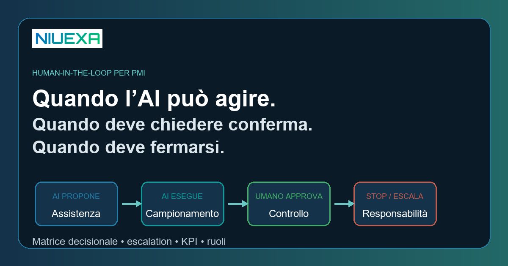
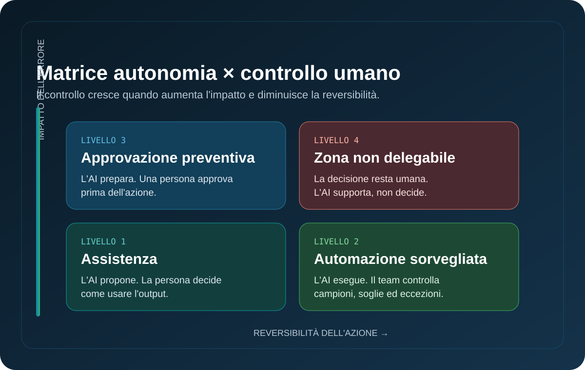
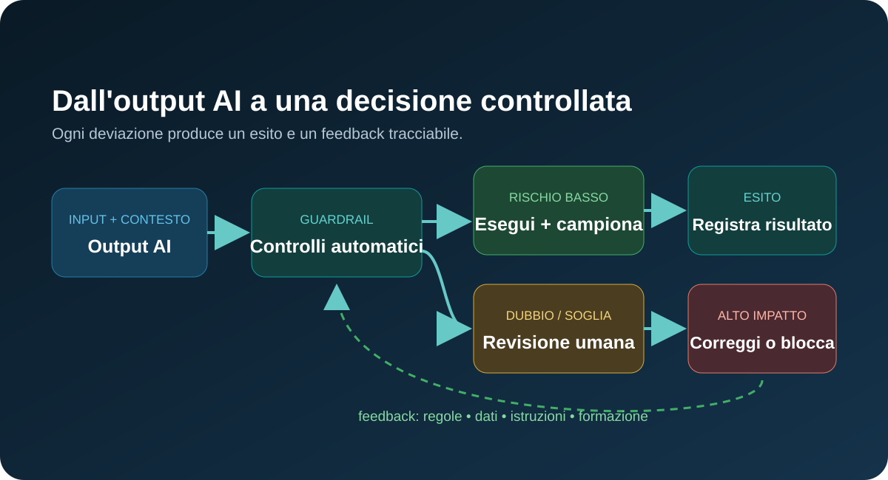

Risposta rapida: cos’è il human-in-the-loop?
Il human-in-the-loop (HITL) è un modello operativo in cui una persona interviene in punti definiti del ciclo decisionale dell’AI per approvare, correggere, sospendere o sostituire un’azione. Non significa revisionare manualmente tutto. Significa assegnare un livello di autonomia proporzionato al rischio: esecuzione automatica per attività a basso impatto e facilmente reversibili; controllo a campione per output standard; approvazione preventiva o blocco per decisioni con effetti rilevanti su persone, denaro, sicurezza o obblighi.
Perché “un umano controllerà” non è un controllo
Molti progetti AI dichiarano di avere supervisione umana, ma non specificano chi deve controllare, con quali informazioni, entro quanto tempo e con quale autorità. Il risultato è una falsa sicurezza: l’operatore vede l’output troppo tardi, non comprende perché sia stato prodotto oppure conferma quasi tutto per velocità.
Il NIST AI Risk Management Framework sottolinea che ruoli e responsabilità nelle configurazioni uomo-AI devono essere chiaramente definiti. Evidenzia inoltre che l’interazione non è automaticamente migliore della decisione umana o dell’AI presa separatamente: in alcune condizioni l’AI può amplificare bias umani. La supervisione, quindi, deve essere competente, informata e realmente azionabile.
Per una PMI questo non richiede un comitato complesso. Richiede cinque decisioni operative: quale evento attiva la revisione, chi è il revisore, quali prove vede, quali azioni può compiere e come viene registrato l’esito.
La matrice Niuexa: quattro livelli di autonomia

| Livello | Regola | Esempi | Controllo |
|---|---|---|---|
| 1. Assistenza | L’AI propone; la persona decide. | Bozza email, sintesi meeting, ricerca interna. | Revisione dell’utente prima dell’uso. |
| 2. Automazione sorvegliata | L’AI esegue task standard e il team verifica campioni ed eccezioni. | Classificazione ticket, estrazione dati, tagging documenti. | Campionamento, soglie qualità, dashboard. |
| 3. Approvazione preventiva | L’AI prepara l’azione, ma non la completa senza consenso. | Preventivo, rimborso, risposta contrattuale, modifica CRM sensibile. | Conferma nominativa con evidenze. |
| 4. Zona non delegabile | La decisione resta umana; l’AI può solo supportare. | Assunzione, licenziamento, credito, sicurezza, diagnosi o obblighi legali. | Decisione umana competente e audit trail. |
Questa matrice è una guida Niuexa, non una classificazione legale. Per sistemi che possono rientrare nelle categorie ad alto rischio occorre una valutazione specifica. L’articolo 14 dell’EU AI Act prevede, per i sistemi ad alto rischio, misure di supervisione umana finalizzate a prevenire o ridurre rischi per salute, sicurezza e diritti fondamentali.
Come progettare l’escalation in sei passaggi
1. Definisci l’unità di lavoro
Evita obiettivi vaghi come “controllare il chatbot”. Definisci un oggetto verificabile: una risposta, una riga estratta, un ticket classificato, un preventivo o un aggiornamento nel CRM.
2. Elenca gli errori che contano
Distingui errori di forma da errori con conseguenze. Un tono imperfetto è diverso dall’invio di un prezzo errato o dall’esposizione di dati riservati. La severità determina il controllo.
3. Imposta trigger osservabili
Un trigger può essere una regola — importo sopra soglia, dato personale presente, fonte mancante — oppure un segnale di qualità: bassa confidenza, conflitto tra fonti, formato non valido, richiesta fuori policy.
4. Dai al revisore il contesto minimo
Per decidere, la persona deve vedere input, output proposto, fonti, azione prevista e motivo dell’escalation. Una semplice finestra “Approva / Rifiuta” favorisce conferme automatiche, non supervisione.
5. Prevedi tre esiti
Non solo approvare o rifiutare. Il revisore deve poter approvare, correggere o fermare e inoltrare a un ruolo più competente. La correzione diventa dato per migliorare il sistema.
6. Registra la decisione
Conserva evento, versione del sistema, revisore, motivazione, modifica e risultato. Il log serve per audit, formazione e miglioramento; deve rispettare minimizzazione e regole di conservazione dei dati.
Il workflow di controllo: dall’output all’apprendimento

Il ciclo dovrebbe partire da controlli automatici semplici: validazione del formato, presenza delle fonti, permessi e policy. Solo gli output che superano i controlli e restano sotto la soglia di rischio possono procedere. Gli altri vanno alla revisione competente. Le correzioni ricorrenti indicano un problema sistemico: knowledge base incompleta, regola ambigua, prompt fragile o processo mal definito.
Ruoli minimi per una PMI
- Process owner: risponde del risultato del workflow e stabilisce limiti, KPI e priorità.
- Revisore operativo: conosce il lavoro e può approvare o correggere l’output.
- Referente tecnico: gestisce integrazioni, logging, accessi, versioni e fallback.
- Referente rischio/compliance: interviene sui casi con dati personali, impatto rilevante o requisiti regolamentari.
Nelle organizzazioni piccole una persona può coprire più ruoli, ma le responsabilità devono rimanere esplicite. Chi costruisce il sistema non dovrebbe essere l’unico a valutarne la qualità.
KPI: misurare il controllo, non solo la velocità
- Tasso di escalation: quota di casi inviati a revisione; deve essere interpretata insieme alla qualità.
- Tasso di override: quante proposte vengono modificate o rifiutate e per quali motivi.
- Escalation mancate: errori che avrebbero richiesto un umano ma hanno superato i controlli.
- Tempo di revisione: latenza introdotta dal controllo e rispetto dello SLA.
- Output accettati senza rilavorazione: misura più utile della semplice quantità generata.
- Incidenti e quasi-incidenti: eventi da analizzare per aggiornare soglie e policy.
L’obiettivo non è portare le escalation a zero. È trovare il punto in cui il workflow produce valore senza trasferire rischio nascosto alle persone o ai clienti.
Checklist prima del go-live
- L’unità di lavoro e l’azione dell’AI sono definite?
- Impatto e reversibilità degli errori sono classificati?
- Esistono trigger oggettivi per escalation e blocco?
- Il revisore vede input, fonti, output e motivo dell’allerta?
- Può correggere, fermare e inoltrare, non solo approvare?
- Log, accessi, conservazione dati e fallback sono configurati?
- Sono misurati override, escalation mancate e tempi di revisione?
- È previsto un riesame periodico delle soglie?
Se una risposta è “no”, il workflow non è ancora pronto per maggiore autonomia.
Fonti e perimetro
Questa guida traduce principi pubblici in un modello operativo per PMI. Le fonti principali sono:
- NIST, AI Risk Management Framework, framework volontario per integrare l’affidabilità nella progettazione, nell’uso e nella valutazione dei sistemi AI.
- NIST AI RMF, Appendix C: Human-AI Interaction, su ruoli, responsabilità e limiti dell’interazione uomo-AI.
- Regolamento (UE) 2024/1689 — AI Act, incluso l’articolo 14 sulla supervisione umana dei sistemi ad alto rischio.
- OECD AI Principles, aggiornati nel 2024, su trasparenza, robustezza e accountability.
Il contenuto è informativo e non sostituisce una valutazione legale o normativa del caso specifico.
FAQ sul human-in-the-loop
Cos’è il human-in-the-loop nell’AI?
È un modello in cui una persona controlla, approva, corregge o interrompe decisioni e azioni AI in punti precisi del workflow.
Serve sempre una revisione umana?
No. Il controllo deve essere proporzionato a impatto, reversibilità, qualità dei dati e capacità di rilevare l’errore.
Quali decisioni non dovrebbero essere automatiche?
Quelle con effetti significativi su persone, denaro, sicurezza, diritti o obblighi richiedono normalmente una decisione umana competente e tracciabile.
Come misuro se il controllo funziona?
Misura override, falsi positivi e negativi, escalation mancate, tempo di revisione, incidenti e qualità degli output accettati.
Il human-in-the-loop basta per rendere sicuro un AI agent?
No. Servono anche accessi limitati, logging, test, dati autorizzati, fallback, gestione delle eccezioni e un owner responsabile.